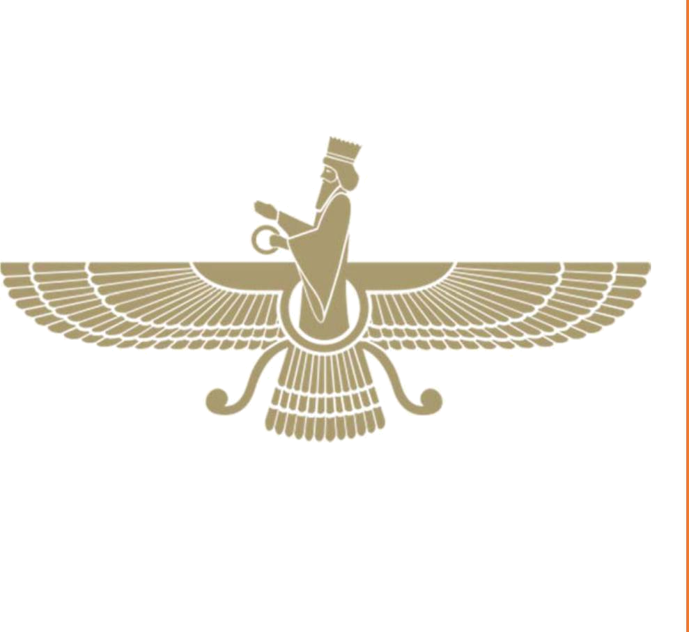

MĀ FĀRSI BALAD‐IM!
Be kušeš‐e Hamid Farroukh
- Dibāce. Dar bāre‐ye in ketāb
- Dars-e 1. Sārā Panāhi
- Dars-e 2. Dust‐e samimi
- Dars-e 3. Mehmān miāyad
- Dars-e 4. Ostād‐e saxtgir
- Dars-e 5. Zibātarin fasl‐e sāl
- Dars-e 6. Pitzā‐ye hāzeri
- Dars-e 7. Kārhā‐ye ruzmarre
- Dars-e 8. Asbābkeši
- Yādāvari I
- Dars-e 9. Dar jostoju‐ye Ketāb
- Dars-e 10. Belit‐e havāpeymā
- Dars-e 11. Jašn‐e tavallod
- Dars-e 12. Gozaštehā
- Dars-e 13. Āšpazi‐ye Sāmān
- Dars-e 14. Šab‐e tufāni
- Dars-e 15. Dust‐e navāzande
- Dars-e 16. Moallem‐e Susan
- Yādāvari II
- Dars-e 17. Pedar‐e varzeškār
- Dars-e 18. Gomšode dar rāh
- Dars-e 19. Alāqe be musiqi
- Dars-e 20. Otobus‐e ba’di
- Dars-e 21. Farāmuškāri
- Dars-e 22. Dozdi dar mahalle
- Dars-e 23. Mosābeqe‐ye futbāl
- Dars-e 24. Kādo‐ye ezdevāj
- Yādāvari III
- . Pāsoxhā-ye yādāvari
- . Vāženāme
- . Parvāne‐ye tasvirhā